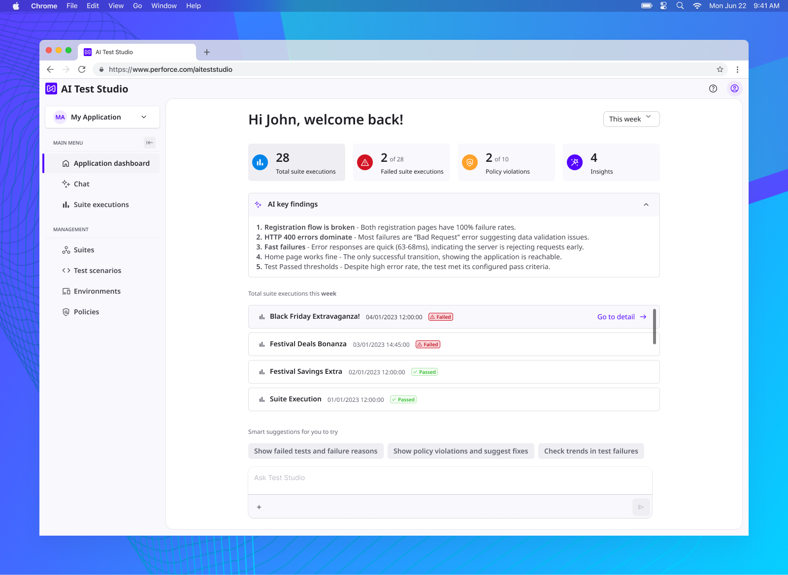
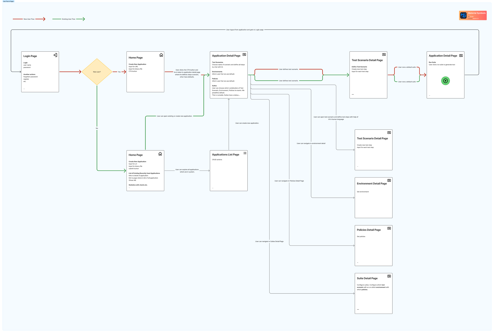
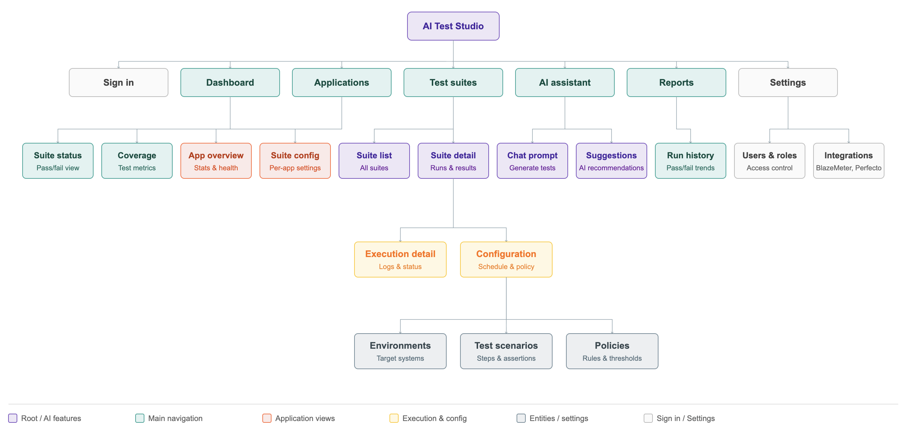
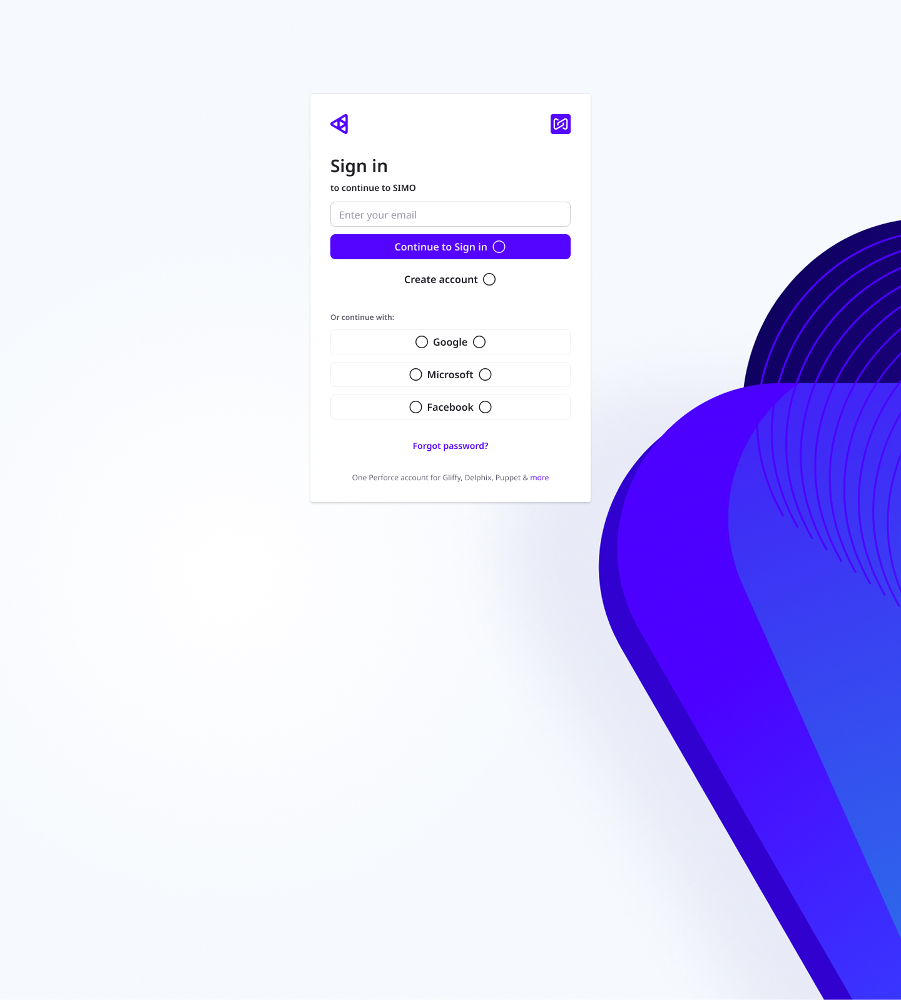
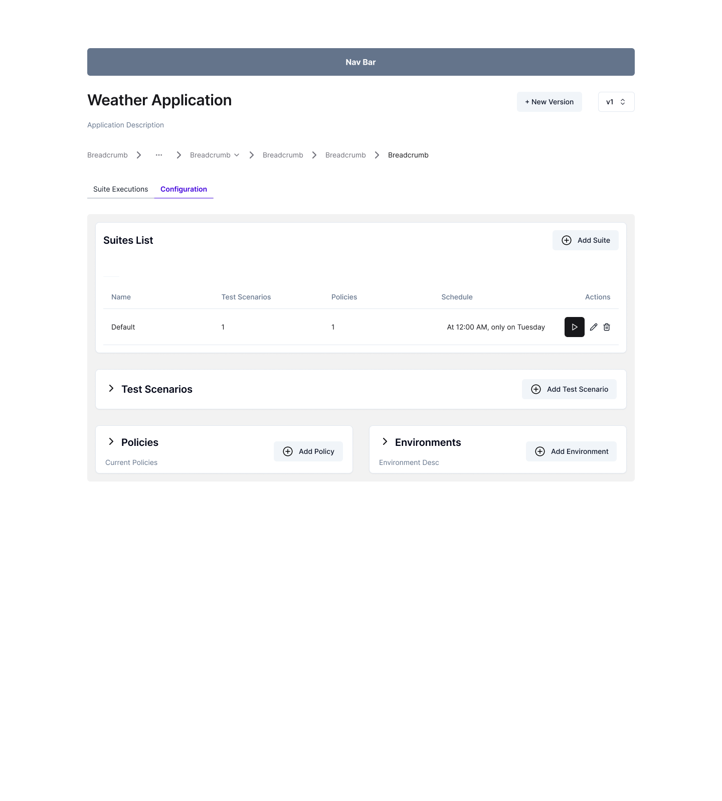
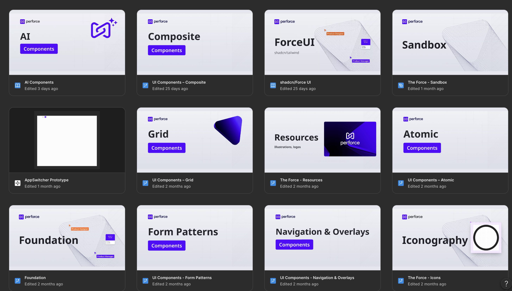
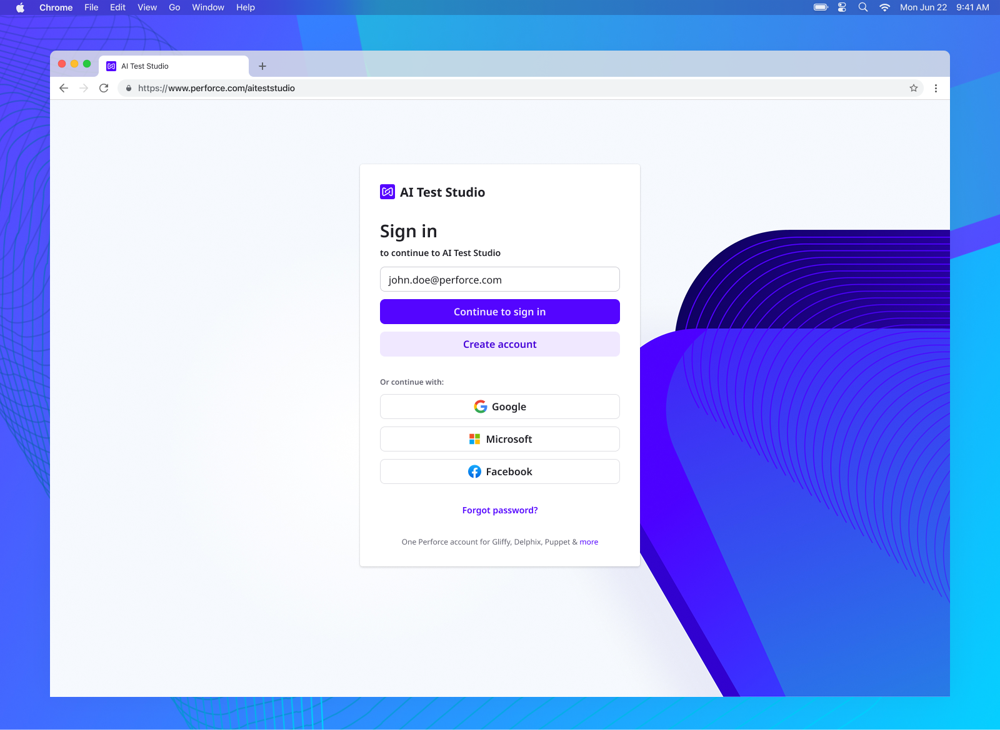
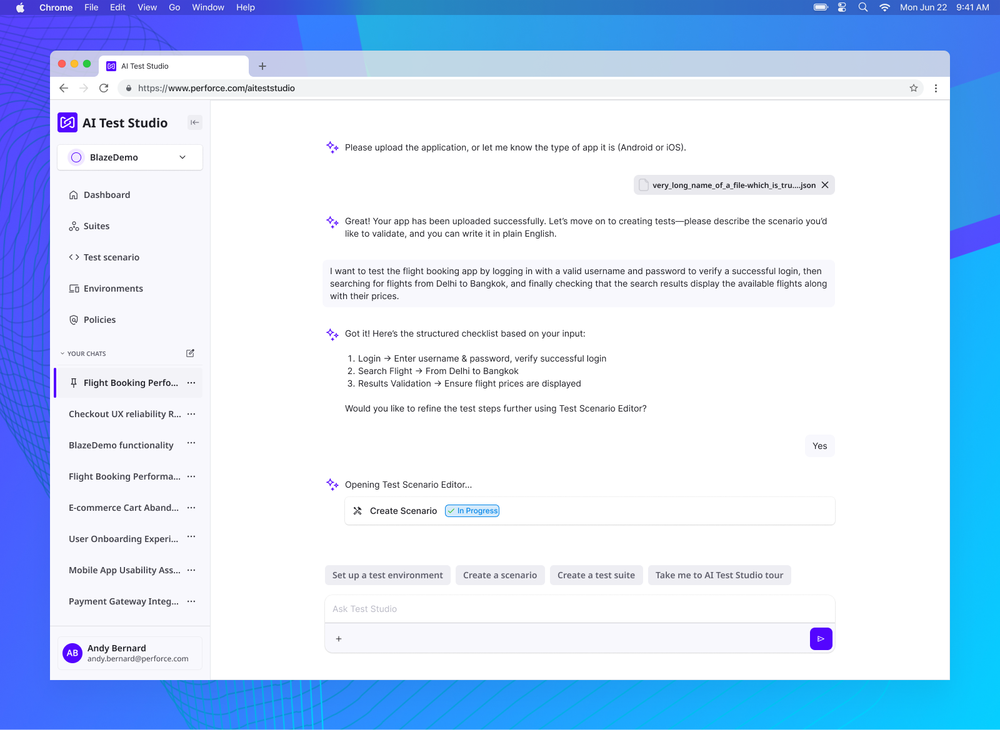
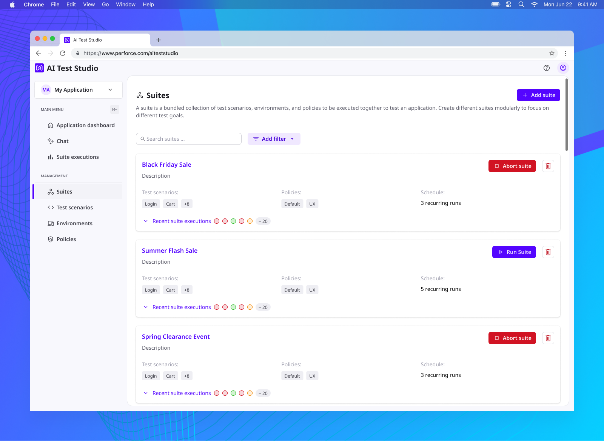
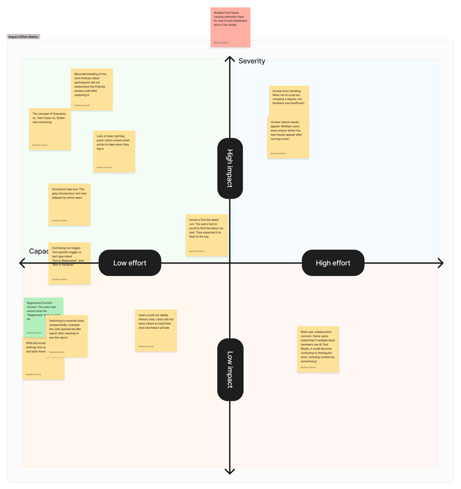

AI Test Studio
AI Test Studio is a new unified testing UI driving a fundamental shift in software testing — from fragmented, skill‑dependent processes to an AI‑driven, autonomous testing fabric that unifies functional, performance, UX, accessibility, and API testing into a single workflow. It embodies the next evolution of Perforce's AI‑driven “shift‑left” testing vision.
Project overview
Background
The product sits within the testing applications unit at Perforce — a company founded in 1995 and headquartered in Minneapolis, Minnesota. I was involved in the complete process of designing this product, from ideation to a real, shipped product. I spent a lot of time on user research, design, and discussions with stakeholders and other team members.
My role
My roles on this project were UX researcher and UX/UI designer.
Time frame
I worked on this project for about one year.
Team and collaboration
The team included a product owner, engineers, UX designers, and a UX researcher, working across different countries worldwide. There was close collaboration between all team members, and I was part of the design team, which followed the Scrum methodology.
AI tools for designing
During this project I started using AI tools such as Figma Make and Claude. AI rapidly improved both my design delivery time and quality.

Design process
- Define problem Research
- Initial research Research
- Understand business goals Research
- Understand user needs Research
- Define personas Research
- Ideation Research
- Sketch user flows Research
- Define information architecture Research
- Sketch wireframes Analysis
- Choose design system UI design
- Design high fidelity clickable prototype UI design
- Validate solution Research

Research
The problemResearch
Perforce offers several quality‑assurance products. The problem is that they are complex: they can be hard to use for junior testers, or for people who don't know how to write tests at all. There can also be multiple variants of the same test across these applications. This leads to losing potential customers.
Initial researchResearch
First Meetings
We had several meetings with stakeholders where we discussed the problem, ideas, and our vision.
Phase One – In‑House Research
We conducted several interviews with stakeholders to understand who BlazeMeter and Perfecto users are. BlazeMeter and Perfecto are products that should exist in an ecosystem together with AI Test Studio. We wanted to know how users interact with the products, what their pain points are, which features they use most, and who the competitors of BlazeMeter and Perfecto are.
Following the stakeholder interviews (qualitative analysis), we conducted quantitative analysis using data gathered from BlazeMeter and Perfecto via Mixpanel and Pendo, evaluating various metrics defined in both tools.
Phase Two – Research with Potential Users
In this phase, we reached out to potential users via LinkedIn and asked them initial interview questions — what type of testing they do, what their problems and workflows are, and what pain points they experience with the products they use, including whether they use any AI tools in their workflows.
We also presented our vision to all participants and gathered their thoughts on the idea, the features we had planned, and whether they would consider using the product we were designing.
Business goalsResearch
The main business goal was to remove the technical barrier of writing test scripts and involve more users in testing their own applications. AI Test Studio connects existing Perforce applications such as BlazeMeter and Perfecto, so it's expected that BlazeMeter customers will start using Perfecto, and vice versa.
User needsResearch
After interviewing potential users, I defined the main user needs: the ability to create tests without knowing how to write them, to maintain all tests in one place, and to run both functional and performance tests from a single test definition.
PersonasResearch
After interviewing potential users, I defined the following personas:
Persona 1: The Quality Engineering Leader(Head of QA, Director of QE, Test Manager)
Who they are
- Own quality strategy and tooling across web, mobile, APIs, and performance
- Often existing Perfecto and/or BlazeMeter customers, or using similar tools
- Manage teams of automation engineers + manual testers; report into VP Eng / CTO
Key Goals
- Standardize tooling and reduce test fragmentation (UI, API, mobile, performance)
- Shorten regression cycles and stabilize releases across teams
- Increase test automation coverage without ballooning headcount
- Demonstrate quality impact to execs with clear metrics and reports
Core Pain Points
- Multiple, siloed tools (separate for mobile, web, API, performance)
- High maintenance of test suites; flaky tests and brittle scripts
- Difficulty getting non-technical testers/product folks to contribute to automation
- Lots of time spent collating reports from different systems into one view
Why Simo / AI Test Studio resonates
- Unified dashboard for all testing activities → aggregate mobile (Perfecto), web, API, performance (BlazeMeter)
- No‑code test creation wizards → enable manual testers and BAs to contribute
- Integrated reporting system + comprehensive analytics and insights → single, shareable view for leadership
- Real-time test execution monitoring → quicker detection of issues during runs
Buying Triggers
- Tool consolidation or standardization initiative
- Pressure to increase coverage and speed without adding headcount
- Recent production issues tied to gaps or fragmentation in testing
Persona 2: The Senior Test Automation Engineer(Senior SDET, Automation Architect, Performance Engineer)
Who they are
- Hands-on technical owner of test frameworks and automation strategy
- Power users of Perfecto and/or BlazeMeter (or competitors)
- Strong influence on tool selection even if they don’t own the budget
Key Goals
- Build reliable, maintainable test suites across UI/mobile/API/performance
- Integrate tests tightly into CI/CD for continuous testing
- Reduce flakiness and technical debt in automation
- Improve debugging and root-cause analysis through better data
Core Pain Points
- {`Maintaining multiple frameworks & infrastructure stacks`}
- Time spent on boilerplate and maintenance instead of higher-value work
- Fragmented logs/results from different tools slow down debugging
- Limited early visibility into performance and API issues
Why Simo / AI Test Studio resonates
- Real device testing + cross‑platform (iOS, Android, Web) via Perfecto set of capabilities
- {`Load & performance + API testing capabilities via BlazeMeter set of capabilities`}
- CI/CD integration capabilities for end-to-end, automated pipelines
- Project management with team collaboration to coordinate defects, tasks, and ownership
- Comprehensive analytics and insights to speed up root-cause analysis
Buying/Champion Triggers
- Frustration with brittle, homegrown frameworks and tool sprawl
- Being tasked to add mobile or performance testing without adding new tools
- Organizational push to “shift left” on performance and reliability
Persona 3: The DevOps / Platform Owner(DevOps Lead, Platform Engineering Manager, Tooling Owner)
Who they are
- Own CI/CD pipelines, environments, and shared platform tooling
- Integrate and maintain testing tools in the delivery pipeline
- Care about stability, scalability, governance, and cost
Key Goals
- Keep pipelines fast and reliable while enforcing quality gates
- Standardize testing tooling across teams and services
- Provide testing as a self-service platform capability
- Control tool proliferation and licensing costs
Core Pain Points
- Many point tools, each with its own integration, maintenance, and failure modes
- Difficulty scaling test infrastructure across multiple teams and regions
- Fragmented visibility into where and why pipelines break due to tests
- Rising spend on overlapping licenses and infrastructure
Why Simo / AI Test Studio resonates
- Scalable cloud testing infrastructure + multi-location testing simulation from BlazeMeter capabilities
- Unified dashboard + integrated reporting system → fewer integrations to build and maintain
- Real-time performance monitoring and test execution monitoring → clearer pipeline feedback
- Project management with team collaboration → more consistent workflows across teams
Buying Triggers
- CI/CD modernization / platformization initiative
- Mandate to consolidate and rationalize engineering tools
- Performance or reliability incidents linked to gaps in automated testing
-
Persona 4: The Product / Release Owner(Product Owner, Release Manager, Program Manager)
Who they are
- Accountable for release readiness and product quality outcomes
- Consumers of test reports and dashboards rather than test creators
- Bridge between engineering, QA, and business stakeholders
Key Goals
- Confident, predictable releases with minimal surprise defects
- Clear view of release health, risk areas, and test coverage
- Faster feedback and decision-making when issues appear
Core Pain Points
- Test data and reports scattered across tools and teams
- Difficulty understanding technical test metrics in terms of business risk
- Time-consuming, manual status reporting before every release
Why Simo / AI Test Studio resonates
- Integrated reporting system with high-level summaries plus drill-downs
- Unified dashboard for all testing activities across platforms and services
- Comprehensive analytics and insights that can be translated into risk indicators
- Project management with team collaboration to track quality-related work items
Buying/Adoption Triggers
- Painful release cycles with lots of manual coordination and reporting
- Expanding portfolio (web + mobile + APIs) making risk visibility harder
- Senior leadership demanding better release health metrics
Persona 5: The Business Stakeholder / Customer-Side Champion(Customer Success Engineer, Technical Account Manager, sometimes Enterprise Buyer/CTO)
Who they are
- Feel the downstream impact of quality (escalations, SLAs, churn)
- Often involved in evaluations for strategic or enterprise-wide tools
- Need a clear link between testing, reliability, and customer outcomes
Key Goals
- Reduce production incidents and customer-facing issues
- Demonstrate control over performance, reliability, and SLAs
- Support business growth (more traffic, more platforms) without degrading UX
Core Pain Points
- Limited visibility into how testing actually prevents incidents
- Hard to quantify the value of existing testing tools to justify spend
- Gaps between performance/device coverage and real-world customer experience
Why Simo / AI Test Studio resonates
- Performance analytics and reporting + real-time performance monitoring from BlazeMeter features
- Visual testing and screenshot comparison from Perfecto features, protecting UX quality
- Comprehensive analytics and insights tying test results to availability, performance, and experience KPIs
Buying/Influence Triggers
- Recent customer-impacting outage or performance regression
- Executive focus on experience SLAs or digital reliability metrics
- Renewal or replacement cycle for major testing/performance tooling
IdeationResearch
The first idea for helping testers was to bring an AI chat into their testing flow. This makes it easier for junior testers to start using BlazeMeter and Perfecto. We also wanted to offer a single source of truth and solve another problem — tests being scattered across different places. The aim was to create a simple, modern, AI‑oriented testing application aimed at junior testers and people who can't write test scripts.
User flowsResearch
In one of the first meetings we defined the first user flow for a new user together, sketching on the whiteboard which screens we might need. After that I kept refining the flows in more detail until we all agreed on the application flow. I defined two main flows: one for a new user and one for an existing user.



Information architectureResearch
This project has many different entities — suites, test scenarios, environments, and policies — so it was important to define a solid information architecture. The research method here was interviews with internal stakeholders.

Analysis
WireframesAnalysis
Once I had a good understanding of the product we needed to build, I started sketching the first wireframes. They covered the complete flow of a new user through the application, from sign in to sign out. I validated with stakeholders whether the flow made sense, and incorporated their comments.





UI design
Design systemUI design
We agreed on using the Force Design System. Perforce also recommended adopting it for all new products. It's a well‑prepared design system that contains all the necessary elements — color variables, typography, spacing, and a full set of UI components.

High‑fidelity clickable prototypeUI design
I designed all the screens in Figma and presented them as a clickable prototype, which gave stakeholders the impression of a real application. I frequently used Figma Make to get suggestions, and later used Claude as a fast, effective way to present clickable prototypes. We iterated on the application design directly in the high‑fidelity prototype, so stakeholders could see how the app would look. We also shared the prototype internally with other people who matched our personas, and incorporated the feedback we gathered.




Validate solution
User testingResearch
The goal — to run usability tests on the MVP of AI Test Studio with DPP participants as well as internal participants. We wanted to understand the UX workflows, the pain points, and how participants interacted with the chat flow.
Test script — we didn't create a strict testing script; instead, we wanted to see how users made sense of the product, so we let them explore the application freely and observed the steps they took.
Findings — we created a document for each participant's session, then used that data to identify and consolidate the issues. Consolidated list of issues that users ran into and that we observed during the usability tests:
- Onboarding & Initial Guidance Issues
- Terminology & Mental Model Mismatches
- AI Chat Interaction and Workflow Problems
- Chat UI / Integration Friction
- Test Creation and Management
- Test Execution and Configuration difficulties
- Results visibility and Analysis limitation
- History Management and Privacy
Usability issues workshopResearch
We ran a usability‑issues workshop to prioritize the issues we'd found.

My learnings
Changing direction
During user testing we found that some users got lost in the classic flow. Terms like “suites”, “policies”, and “environments” add cognitive load for some people — and the AI chat can help with exactly that. So we decided to focus on the AI part of the application to help users get past this obstacle.
Artificial Intelligence
I learned how to design an AI chat. It was my first AI‑based product, and in my opinion, designing an AI product requires a completely new skill set.